We have Fama-French monthly pricing factor data from 2000-01 to 2024-06. We want to have a look at its descriptive statistics.
data <- read_csv("data/FF_3Factors_US_monthly.csv")
get_stat <- function(x, q_list=c(0.025, 0.5, 0.975)){
## Return extended summary statistics with quantiles and sd.
# @q_list: vector of quantiles to calculate;
x <- na.omit(x)
c(summary(x), quantile(x, q_list),
"sd" = sd(x),
"skewness" = skewness(x),
"kurtosis" = kurtosis(x)
)
}Have a preview of the data structure
data %>%
knitr::kable(floating.environment="sidewaystable", digits = 5, escape=F) %>%
kable_styling(bootstrap_options = c("striped", "hover"), full_width = F, latex_options="scale_down") %>%
scroll_box(width = "100%", height = "500px")| Date | Mkt-RF | SMB | HML | RF |
|---|---|---|---|---|
| 2000-01-01 | -4.74 | 5.77 | -1.88 | 0.41 |
| 2000-02-01 | 2.45 | 21.36 | -9.59 | 0.43 |
| 2000-03-01 | 5.20 | -17.20 | 8.13 | 0.47 |
| 2000-04-01 | -6.40 | -6.68 | 7.26 | 0.46 |
| 2000-05-01 | -4.42 | -6.05 | 4.75 | 0.50 |
| 2000-06-01 | 4.64 | 12.84 | -8.42 | 0.40 |
| 2000-07-01 | -2.51 | -3.07 | 8.31 | 0.48 |
| 2000-08-01 | 7.03 | -0.61 | -1.39 | 0.50 |
| 2000-09-01 | -5.45 | -1.82 | 7.17 | 0.51 |
| 2000-10-01 | -2.76 | -3.88 | 5.71 | 0.56 |
| 2000-11-01 | -10.72 | -3.41 | 12.30 | 0.51 |
| 2000-12-01 | 1.19 | 0.73 | 7.61 | 0.50 |
| 2001-01-01 | 3.13 | 6.68 | -5.07 | 0.54 |
| 2001-02-01 | -10.05 | -0.78 | 12.47 | 0.38 |
| 2001-03-01 | -7.26 | 0.25 | 6.42 | 0.42 |
| 2001-04-01 | 7.94 | 0.55 | -4.67 | 0.39 |
| 2001-05-01 | 0.72 | 2.50 | 3.36 | 0.32 |
| 2001-06-01 | -1.94 | 6.24 | -1.12 | 0.28 |
| 2001-07-01 | -2.13 | -4.19 | 5.21 | 0.30 |
| 2001-08-01 | -6.46 | 2.48 | 2.31 | 0.31 |
| 2001-09-01 | -9.25 | -6.23 | 1.45 | 0.28 |
| 2001-10-01 | 2.46 | 7.48 | -7.65 | 0.22 |
| 2001-11-01 | 7.54 | -0.47 | 2.21 | 0.17 |
| 2001-12-01 | 1.60 | 4.74 | 0.84 | 0.15 |
| 2002-01-01 | -1.44 | 1.19 | 3.44 | 0.14 |
| 2002-02-01 | -2.29 | -1.01 | 2.16 | 0.13 |
| 2002-03-01 | 4.24 | 4.21 | 1.06 | 0.13 |
| 2002-04-01 | -5.20 | 5.96 | 3.88 | 0.15 |
| 2002-05-01 | -1.38 | -3.21 | 1.53 | 0.14 |
| 2002-06-01 | -7.21 | 4.29 | -0.05 | 0.13 |
| 2002-07-01 | -8.18 | -5.28 | -3.85 | 0.15 |
| 2002-08-01 | 0.50 | -2.86 | 3.28 | 0.14 |
| 2002-09-01 | -10.35 | 2.40 | 1.47 | 0.14 |
| 2002-10-01 | 7.84 | -3.41 | -3.95 | 0.14 |
| 2002-11-01 | 5.96 | 3.18 | -1.23 | 0.12 |
| 2002-12-01 | -5.76 | 0.09 | 2.14 | 0.11 |
| 2003-01-01 | -2.57 | 1.33 | -0.83 | 0.10 |
| 2003-02-01 | -1.88 | -0.45 | -1.39 | 0.09 |
| 2003-03-01 | 1.09 | 1.02 | -1.93 | 0.10 |
| 2003-04-01 | 8.22 | 0.63 | 1.14 | 0.10 |
| 2003-05-01 | 6.05 | 4.67 | 0.40 | 0.09 |
| 2003-06-01 | 1.42 | 1.74 | 0.11 | 0.10 |
| 2003-07-01 | 2.35 | 5.06 | -1.24 | 0.07 |
| 2003-08-01 | 2.34 | 2.59 | 1.53 | 0.07 |
| 2003-09-01 | -1.24 | 0.80 | 0.16 | 0.08 |
| 2003-10-01 | 6.08 | 2.70 | 1.97 | 0.07 |
| 2003-11-01 | 1.35 | 2.08 | 1.78 | 0.07 |
| 2003-12-01 | 4.29 | -2.68 | 1.60 | 0.08 |
| 2004-01-01 | 2.15 | 2.55 | 2.49 | 0.07 |
| 2004-02-01 | 1.40 | -1.58 | 0.90 | 0.06 |
| 2004-03-01 | -1.32 | 1.72 | 0.27 | 0.09 |
| 2004-04-01 | -1.83 | -1.68 | -3.10 | 0.08 |
| 2004-05-01 | 1.17 | -0.20 | -0.25 | 0.06 |
| 2004-06-01 | 1.86 | 2.26 | 1.18 | 0.08 |
| 2004-07-01 | -4.06 | -3.81 | 3.24 | 0.10 |
| 2004-08-01 | 0.08 | -1.48 | 0.97 | 0.11 |
| 2004-09-01 | 1.60 | 3.01 | 0.00 | 0.11 |
| 2004-10-01 | 1.43 | 0.15 | -0.22 | 0.11 |
| 2004-11-01 | 4.54 | 3.74 | 1.41 | 0.15 |
| 2004-12-01 | 3.43 | -0.03 | -0.22 | 0.16 |
| 2005-01-01 | -2.76 | -1.72 | 2.06 | 0.16 |
| 2005-02-01 | 1.89 | -0.57 | 1.54 | 0.16 |
| 2005-03-01 | -1.97 | -1.40 | 2.04 | 0.21 |
| 2005-04-01 | -2.61 | -3.94 | 0.07 | 0.21 |
| 2005-05-01 | 3.65 | 2.89 | -0.64 | 0.24 |
| 2005-06-01 | 0.57 | 2.58 | 2.83 | 0.23 |
| 2005-07-01 | 3.92 | 2.91 | -0.79 | 0.24 |
| 2005-08-01 | -1.22 | -0.97 | 1.32 | 0.30 |
| 2005-09-01 | 0.49 | -0.65 | 0.71 | 0.29 |
| 2005-10-01 | -2.02 | -1.25 | 0.42 | 0.27 |
| 2005-11-01 | 3.61 | 0.99 | -1.16 | 0.31 |
| 2005-12-01 | -0.25 | -0.42 | 0.20 | 0.32 |
| 2006-01-01 | 3.04 | 5.39 | 1.08 | 0.35 |
| 2006-02-01 | -0.30 | -0.38 | -0.34 | 0.34 |
| 2006-03-01 | 1.46 | 3.44 | 0.60 | 0.37 |
| 2006-04-01 | 0.73 | -1.42 | 2.34 | 0.36 |
| 2006-05-01 | -3.57 | -2.96 | 2.41 | 0.43 |
| 2006-06-01 | -0.35 | -0.39 | 0.85 | 0.40 |
| 2006-07-01 | -0.78 | -3.98 | 2.60 | 0.40 |
| 2006-08-01 | 2.03 | 1.03 | -2.06 | 0.42 |
| 2006-09-01 | 1.84 | -1.36 | 0.08 | 0.41 |
| 2006-10-01 | 3.23 | 1.75 | -0.31 | 0.41 |
| 2006-11-01 | 1.71 | 0.70 | 0.14 | 0.42 |
| 2006-12-01 | 0.87 | -1.14 | 2.73 | 0.40 |
| 2007-01-01 | 1.40 | 0.13 | -0.68 | 0.44 |
| 2007-02-01 | -1.96 | 1.19 | -0.14 | 0.38 |
| 2007-03-01 | 0.68 | 0.16 | -0.97 | 0.43 |
| 2007-04-01 | 3.49 | -2.16 | -1.45 | 0.44 |
| 2007-05-01 | 3.24 | 0.24 | -0.65 | 0.41 |
| 2007-06-01 | -1.96 | 0.74 | -1.05 | 0.40 |
| 2007-07-01 | -3.73 | -2.61 | -3.71 | 0.40 |
| 2007-08-01 | 0.92 | -0.12 | -1.86 | 0.42 |
| 2007-09-01 | 3.22 | -2.23 | -2.21 | 0.32 |
| 2007-10-01 | 1.80 | 0.08 | -2.98 | 0.32 |
| 2007-11-01 | -4.83 | -2.93 | -0.94 | 0.34 |
| 2007-12-01 | -0.87 | 0.13 | -0.55 | 0.27 |
| 2008-01-01 | -6.36 | -1.03 | 3.97 | 0.21 |
| 2008-02-01 | -3.09 | -0.43 | -0.84 | 0.13 |
| 2008-03-01 | -0.93 | 0.71 | 0.30 | 0.17 |
| 2008-04-01 | 4.60 | -1.72 | -0.94 | 0.18 |
| 2008-05-01 | 1.86 | 2.96 | -1.43 | 0.18 |
| 2008-06-01 | -8.44 | 1.23 | -2.71 | 0.17 |
| 2008-07-01 | -0.77 | 2.61 | 5.42 | 0.15 |
| 2008-08-01 | 1.53 | 3.60 | 1.59 | 0.13 |
| 2008-09-01 | -9.24 | -1.23 | 5.91 | 0.15 |
| 2008-10-01 | -17.23 | -2.60 | -2.30 | 0.08 |
| 2008-11-01 | -7.86 | -2.85 | -6.31 | 0.03 |
| 2008-12-01 | 1.74 | 3.46 | 0.14 | 0.00 |
| 2009-01-01 | -8.12 | 0.07 | -11.29 | 0.00 |
| 2009-02-01 | -10.10 | 0.05 | -6.95 | 0.01 |
| 2009-03-01 | 8.95 | 0.03 | 3.47 | 0.02 |
| 2009-04-01 | 10.18 | 5.40 | 5.36 | 0.01 |
| 2009-05-01 | 5.21 | -2.52 | 0.28 | 0.00 |
| 2009-06-01 | 0.43 | 2.63 | -2.73 | 0.01 |
| 2009-07-01 | 7.72 | 1.87 | 4.83 | 0.01 |
| 2009-08-01 | 3.33 | -1.08 | 7.63 | 0.01 |
| 2009-09-01 | 4.08 | 2.43 | 1.05 | 0.01 |
| 2009-10-01 | -2.59 | -4.35 | -4.21 | 0.00 |
| 2009-11-01 | 5.56 | -2.40 | -0.34 | 0.00 |
| 2009-12-01 | 2.75 | 6.05 | -0.17 | 0.01 |
| 2010-01-01 | -3.36 | 0.40 | 0.43 | 0.00 |
| 2010-02-01 | 3.40 | 1.19 | 3.23 | 0.00 |
| 2010-03-01 | 6.31 | 1.48 | 2.21 | 0.01 |
| 2010-04-01 | 2.00 | 4.87 | 2.89 | 0.01 |
| 2010-05-01 | -7.89 | 0.09 | -2.44 | 0.01 |
| 2010-06-01 | -5.57 | -1.82 | -4.70 | 0.01 |
| 2010-07-01 | 6.93 | 0.20 | -0.31 | 0.01 |
| 2010-08-01 | -4.77 | -3.00 | -1.90 | 0.01 |
| 2010-09-01 | 9.54 | 3.96 | -3.16 | 0.01 |
| 2010-10-01 | 3.88 | 1.14 | -2.43 | 0.01 |
| 2010-11-01 | 0.60 | 3.77 | -0.96 | 0.01 |
| 2010-12-01 | 6.82 | 0.73 | 3.70 | 0.01 |
| 2011-01-01 | 1.99 | -2.50 | 0.83 | 0.01 |
| 2011-02-01 | 3.49 | 1.53 | 1.27 | 0.01 |
| 2011-03-01 | 0.46 | 2.54 | -1.83 | 0.01 |
| 2011-04-01 | 2.90 | -0.38 | -2.43 | 0.00 |
| 2011-05-01 | -1.27 | -0.59 | -2.12 | 0.00 |
| 2011-06-01 | -1.75 | -0.12 | -0.42 | 0.00 |
| 2011-07-01 | -2.35 | -1.26 | -0.90 | 0.00 |
| 2011-08-01 | -5.99 | -3.05 | -2.36 | 0.01 |
| 2011-09-01 | -7.59 | -3.31 | -1.72 | 0.00 |
| 2011-10-01 | 11.35 | 3.28 | 0.10 | 0.00 |
| 2011-11-01 | -0.28 | -0.16 | -0.46 | 0.00 |
| 2011-12-01 | 0.74 | -0.59 | 1.63 | 0.00 |
| 2012-01-01 | 5.05 | 2.04 | -0.97 | 0.00 |
| 2012-02-01 | 4.42 | -1.85 | 0.43 | 0.00 |
| 2012-03-01 | 3.11 | -0.64 | 1.14 | 0.00 |
| 2012-04-01 | -0.85 | -0.42 | -0.78 | 0.00 |
| 2012-05-01 | -6.19 | 0.07 | -1.07 | 0.01 |
| 2012-06-01 | 3.89 | 0.67 | 0.62 | 0.00 |
| 2012-07-01 | 0.79 | -2.74 | -0.02 | 0.00 |
| 2012-08-01 | 2.55 | 0.47 | 1.30 | 0.01 |
| 2012-09-01 | 2.73 | 0.50 | 1.60 | 0.01 |
| 2012-10-01 | -1.76 | -1.15 | 3.59 | 0.01 |
| 2012-11-01 | 0.78 | 0.63 | -0.84 | 0.01 |
| 2012-12-01 | 1.18 | 1.48 | 3.51 | 0.01 |
| 2013-01-01 | 5.57 | 0.33 | 0.96 | 0.00 |
| 2013-02-01 | 1.29 | -0.27 | 0.11 | 0.00 |
| 2013-03-01 | 4.03 | 0.81 | -0.19 | 0.00 |
| 2013-04-01 | 1.55 | -2.37 | 0.45 | 0.00 |
| 2013-05-01 | 2.80 | 1.70 | 2.63 | 0.00 |
| 2013-06-01 | -1.20 | 1.33 | 0.03 | 0.00 |
| 2013-07-01 | 5.65 | 1.87 | 0.57 | 0.00 |
| 2013-08-01 | -2.71 | 0.27 | -2.69 | 0.00 |
| 2013-09-01 | 3.77 | 2.88 | -1.22 | 0.00 |
| 2013-10-01 | 4.18 | -1.53 | 1.25 | 0.00 |
| 2013-11-01 | 3.13 | 1.29 | 0.32 | 0.00 |
| 2013-12-01 | 2.81 | -0.46 | -0.02 | 0.00 |
| 2014-01-01 | -3.32 | 0.89 | -2.07 | 0.00 |
| 2014-02-01 | 4.65 | 0.35 | -0.31 | 0.00 |
| 2014-03-01 | 0.43 | -1.81 | 4.93 | 0.00 |
| 2014-04-01 | -0.19 | -4.19 | 1.17 | 0.00 |
| 2014-05-01 | 2.06 | -1.88 | -0.13 | 0.00 |
| 2014-06-01 | 2.61 | 3.09 | -0.70 | 0.00 |
| 2014-07-01 | -2.04 | -4.29 | 0.03 | 0.00 |
| 2014-08-01 | 4.24 | 0.40 | -0.45 | 0.00 |
| 2014-09-01 | -1.97 | -3.71 | -1.34 | 0.00 |
| 2014-10-01 | 2.52 | 4.21 | -1.81 | 0.00 |
| 2014-11-01 | 2.55 | -2.06 | -3.09 | 0.00 |
| 2014-12-01 | -0.06 | 2.49 | 2.27 | 0.00 |
| 2015-01-01 | -3.11 | -0.56 | -3.58 | 0.00 |
| 2015-02-01 | 6.13 | 0.63 | -1.86 | 0.00 |
| 2015-03-01 | -1.12 | 3.04 | -0.37 | 0.00 |
| 2015-04-01 | 0.59 | -3.06 | 1.82 | 0.00 |
| 2015-05-01 | 1.36 | 0.93 | -1.14 | 0.00 |
| 2015-06-01 | -1.53 | 2.91 | -0.79 | 0.00 |
| 2015-07-01 | 1.54 | -4.17 | -4.13 | 0.00 |
| 2015-08-01 | -6.04 | 0.33 | 2.77 | 0.00 |
| 2015-09-01 | -3.07 | -2.62 | 0.56 | 0.00 |
| 2015-10-01 | 7.75 | -1.88 | -0.46 | 0.00 |
| 2015-11-01 | 0.56 | 3.60 | -0.42 | 0.00 |
| 2015-12-01 | -2.17 | -2.84 | -2.61 | 0.01 |
| 2016-01-01 | -5.77 | -3.42 | 2.09 | 0.01 |
| 2016-02-01 | -0.07 | 0.73 | -0.57 | 0.02 |
| 2016-03-01 | 6.96 | 0.82 | 1.19 | 0.02 |
| 2016-04-01 | 0.91 | 0.76 | 3.28 | 0.01 |
| 2016-05-01 | 1.78 | -0.17 | -1.66 | 0.01 |
| 2016-06-01 | -0.05 | 0.61 | -1.48 | 0.02 |
| 2016-07-01 | 3.95 | 2.49 | -1.32 | 0.02 |
| 2016-08-01 | 0.49 | 1.15 | 3.18 | 0.02 |
| 2016-09-01 | 0.25 | 2.12 | -1.24 | 0.02 |
| 2016-10-01 | -2.02 | -4.40 | 4.09 | 0.02 |
| 2016-11-01 | 4.86 | 5.71 | 8.21 | 0.01 |
| 2016-12-01 | 1.82 | 0.10 | 3.53 | 0.03 |
| 2017-01-01 | 1.94 | -1.19 | -2.75 | 0.04 |
| 2017-02-01 | 3.57 | -2.05 | -1.67 | 0.04 |
| 2017-03-01 | 0.17 | 1.14 | -3.35 | 0.03 |
| 2017-04-01 | 1.09 | 0.73 | -2.13 | 0.05 |
| 2017-05-01 | 1.06 | -2.57 | -3.78 | 0.06 |
| 2017-06-01 | 0.78 | 2.25 | 1.48 | 0.06 |
| 2017-07-01 | 1.87 | -1.51 | -0.31 | 0.07 |
| 2017-08-01 | 0.16 | -1.67 | -2.10 | 0.09 |
| 2017-09-01 | 2.51 | 4.47 | 3.13 | 0.09 |
| 2017-10-01 | 2.25 | -1.94 | 0.20 | 0.09 |
| 2017-11-01 | 3.12 | -0.55 | -0.03 | 0.08 |
| 2017-12-01 | 1.06 | -1.32 | 0.06 | 0.09 |
| 2018-01-01 | 5.57 | -3.12 | -1.29 | 0.12 |
| 2018-02-01 | -3.65 | 0.26 | -1.04 | 0.11 |
| 2018-03-01 | -2.35 | 4.06 | -0.21 | 0.11 |
| 2018-04-01 | 0.28 | 1.13 | 0.54 | 0.14 |
| 2018-05-01 | 2.65 | 5.26 | -3.22 | 0.14 |
| 2018-06-01 | 0.48 | 1.13 | -2.33 | 0.14 |
| 2018-07-01 | 3.19 | -2.22 | 0.45 | 0.16 |
| 2018-08-01 | 3.44 | 1.15 | -4.00 | 0.16 |
| 2018-09-01 | 0.06 | -2.29 | -1.70 | 0.15 |
| 2018-10-01 | -7.68 | -4.74 | 3.41 | 0.19 |
| 2018-11-01 | 1.69 | -0.68 | 0.28 | 0.18 |
| 2018-12-01 | -9.57 | -2.37 | -1.88 | 0.20 |
| 2019-01-01 | 8.40 | 2.89 | -0.44 | 0.21 |
| 2019-02-01 | 3.40 | 2.07 | -2.70 | 0.18 |
| 2019-03-01 | 1.10 | -3.06 | -4.13 | 0.19 |
| 2019-04-01 | 3.97 | -1.72 | 2.15 | 0.21 |
| 2019-05-01 | -6.94 | -1.31 | -2.37 | 0.21 |
| 2019-06-01 | 6.93 | 0.28 | -0.70 | 0.18 |
| 2019-07-01 | 1.19 | -1.93 | 0.47 | 0.19 |
| 2019-08-01 | -2.58 | -2.39 | -4.79 | 0.16 |
| 2019-09-01 | 1.43 | -0.96 | 6.75 | 0.18 |
| 2019-10-01 | 2.06 | 0.30 | -1.90 | 0.16 |
| 2019-11-01 | 3.88 | 0.79 | -2.01 | 0.12 |
| 2019-12-01 | 2.77 | 0.74 | 1.77 | 0.14 |
| 2020-01-01 | -0.11 | -3.12 | -6.28 | 0.13 |
| 2020-02-01 | -8.13 | 1.07 | -3.80 | 0.12 |
| 2020-03-01 | -13.38 | -4.82 | -13.83 | 0.13 |
| 2020-04-01 | 13.65 | 2.46 | -1.34 | 0.00 |
| 2020-05-01 | 5.58 | 2.49 | -4.86 | 0.01 |
| 2020-06-01 | 2.46 | 2.69 | -2.21 | 0.01 |
| 2020-07-01 | 5.77 | -2.31 | -1.41 | 0.01 |
| 2020-08-01 | 7.63 | -0.24 | -2.97 | 0.01 |
| 2020-09-01 | -3.63 | 0.02 | -2.70 | 0.01 |
| 2020-10-01 | -2.10 | 4.38 | 4.23 | 0.01 |
| 2020-11-01 | 12.47 | 5.80 | 2.06 | 0.01 |
| 2020-12-01 | 4.63 | 4.88 | -1.51 | 0.01 |
| 2021-01-01 | -0.03 | 7.37 | 3.04 | 0.01 |
| 2021-02-01 | 2.78 | 2.06 | 7.09 | 0.00 |
| 2021-03-01 | 3.08 | -2.36 | 7.40 | 0.00 |
| 2021-04-01 | 4.93 | -3.19 | -0.97 | 0.00 |
| 2021-05-01 | 0.29 | -0.21 | 7.08 | 0.00 |
| 2021-06-01 | 2.75 | 1.66 | -7.84 | 0.00 |
| 2021-07-01 | 1.27 | -3.97 | -1.84 | 0.00 |
| 2021-08-01 | 2.91 | -0.41 | -0.19 | 0.00 |
| 2021-09-01 | -4.37 | 0.68 | 5.15 | 0.00 |
| 2021-10-01 | 6.65 | -2.35 | -0.45 | 0.00 |
| 2021-11-01 | -1.55 | -1.31 | -0.44 | 0.00 |
| 2021-12-01 | 3.10 | -1.68 | 3.25 | 0.01 |
| 2022-01-01 | -6.25 | -5.95 | 12.88 | 0.00 |
| 2022-02-01 | -2.29 | 2.20 | 3.11 | 0.00 |
| 2022-03-01 | 3.05 | -1.62 | -1.81 | 0.01 |
| 2022-04-01 | -9.46 | -1.39 | 6.20 | 0.01 |
| 2022-05-01 | -0.34 | -1.84 | 8.48 | 0.03 |
| 2022-06-01 | -8.43 | 2.10 | -6.01 | 0.06 |
| 2022-07-01 | 9.57 | 2.80 | -4.05 | 0.08 |
| 2022-08-01 | -3.77 | 1.40 | 0.29 | 0.19 |
| 2022-09-01 | -9.35 | -0.82 | 0.05 | 0.19 |
| 2022-10-01 | 7.83 | 0.07 | 8.02 | 0.23 |
| 2022-11-01 | 4.60 | -3.50 | 1.38 | 0.29 |
| 2022-12-01 | -6.41 | -0.70 | 1.36 | 0.33 |
| 2023-01-01 | 6.65 | 5.00 | -4.02 | 0.35 |
| 2023-02-01 | -2.58 | 1.17 | -0.80 | 0.34 |
| 2023-03-01 | 2.51 | -5.52 | -8.87 | 0.36 |
| 2023-04-01 | 0.61 | -3.35 | -0.05 | 0.35 |
| 2023-05-01 | 0.35 | 1.60 | -7.72 | 0.36 |
| 2023-06-01 | 6.46 | 1.54 | -0.25 | 0.40 |
| 2023-07-01 | 3.21 | 2.07 | 4.09 | 0.45 |
| 2023-08-01 | -2.39 | -3.12 | -1.12 | 0.45 |
| 2023-09-01 | -5.24 | -2.49 | 1.51 | 0.43 |
| 2023-10-01 | -3.18 | -3.86 | 0.17 | 0.47 |
| 2023-11-01 | 8.84 | -0.01 | 1.61 | 0.44 |
| 2023-12-01 | 4.87 | 6.34 | 4.93 | 0.43 |
| 2024-01-01 | 0.70 | -5.10 | -2.33 | 0.47 |
| 2024-02-01 | 5.06 | -0.16 | -3.54 | 0.42 |
| 2024-03-01 | 2.83 | -2.46 | 4.16 | 0.43 |
| 2024-04-01 | -4.67 | -2.34 | -0.54 | 0.47 |
| 2024-05-01 | 4.34 | 0.61 | -1.37 | 0.44 |
| 2024-06-01 | 2.78 | -3.02 | -3.31 | 0.41 |
apply(data[,-1], 2, get_stat) %>%
stargazer(type = "text", digits=2)
==================================
Mkt-RF SMB HML RF
----------------------------------
Min. -17.23 -17.20 -13.83 0
1st Qu. -2.02 -1.85 -1.69 0.01
Median 1.17 0.08 -0.05 0.09
Mean 0.58 0.13 0.18 0.14
3rd Qu. 3.31 1.84 1.78 0.23
Max. 13.65 21.36 12.88 0.56
2.5% -9.42 -5.01 -7.42 0
50% 1.17 0.08 -0.05 0.09
97.5% 8.70 6.02 7.89 0.48
sd 4.61 3.21 3.50 0.16
skewness -0.48 0.74 0.20 0.92
kurtosis 3.71 11.64 5.27 2.50
----------------------------------Plot histogram, empirical density, and compare with normal density (in blue).
ggplot(data, aes(x=SMB)) +
geom_histogram(aes(y=..density..),
fill="#BDBCBC",
color="black",
binwidth = 2,
boundary=0) +
geom_density(color="black") +
stat_function(fun = dnorm, args = list(mean = 0, sd = 1), color="blue") +
labs(x="Small minus big, SMB")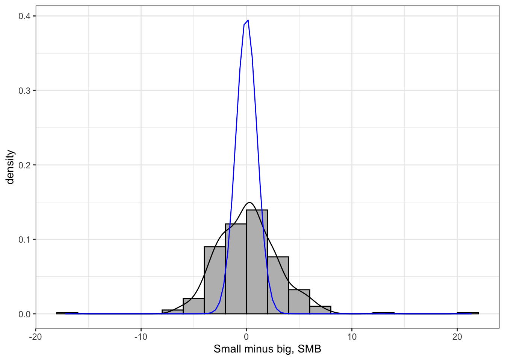
Issue: hard to see the tail behavior.
Solution: use Quantile-Quantile (Q-Q) plots.
The Q-Q plot, or quantile-quantile plot, is a graphical tool to help us assess if a set of data plausibly came from some theoretical distribution such as a normal distribution.
A QQ plot is a scatter plot created by plotting two sets of quantiles against one another.
ggplot(data, aes(sample=SMB)) +
geom_qq() +
geom_qq_line(color="red") +
labs(x="Theoretical quantiles", y="Sample quantiles",
title=sprintf("Normal Q-Q plot — SMB, sd: %.2f, kurtosis: %.2f", sd(data$SMB), kurtosis(data$SMB))) +
scale_y_continuous(limits=c(-15,20))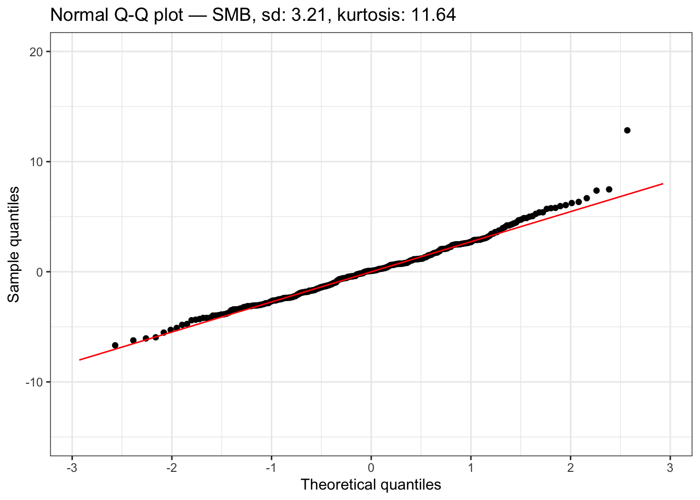
Standardize SMB to improve visualization
ggplot() +
geom_qq(aes(sample=with(data, (SMB-mean(SMB))/sd(SMB)))) +
geom_qq_line(aes(sample=with(data, (SMB-mean(SMB))/sd(SMB))), color="red") +
labs(x="Theoretical quantiles", y="Sample quantiles",
title=sprintf("Normal Q-Q plot — SMB, sd: %.2f, kurtosis: %.2f", sd(data$SMB), kurtosis(data$SMB))) 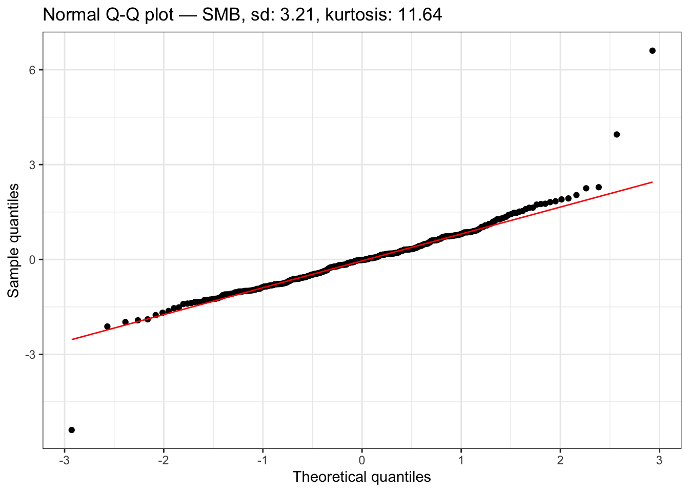
ggplot(data, aes(x=HML)) +
geom_histogram(aes(y=..density..),
fill="#BDBCBC",
color="black",
binwidth = 2,
boundary=0) +
geom_density(color="black") +
stat_function(fun = dnorm, args = list(mean = 0, sd = 1), color="blue") +
labs(x="High minus low, HML")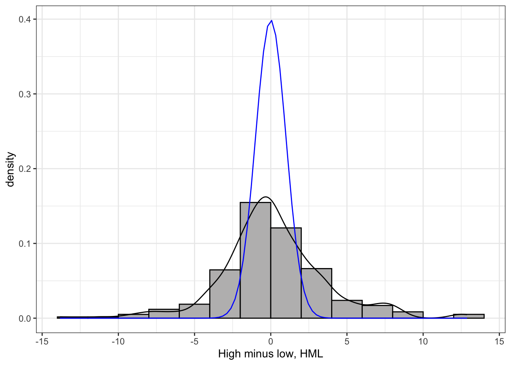
ggplot(data, aes(sample=HML)) +
geom_qq() +
geom_qq_line(color="red") +
labs(x="Theoretical quantiles", y="Sample quantiles",
title=sprintf("Normal Q-Q plot — HML, sd: %.2f, kurtosis: %.2f", sd(data$HML), kurtosis(data$HML))) +
scale_y_continuous(limits=c(-15,20))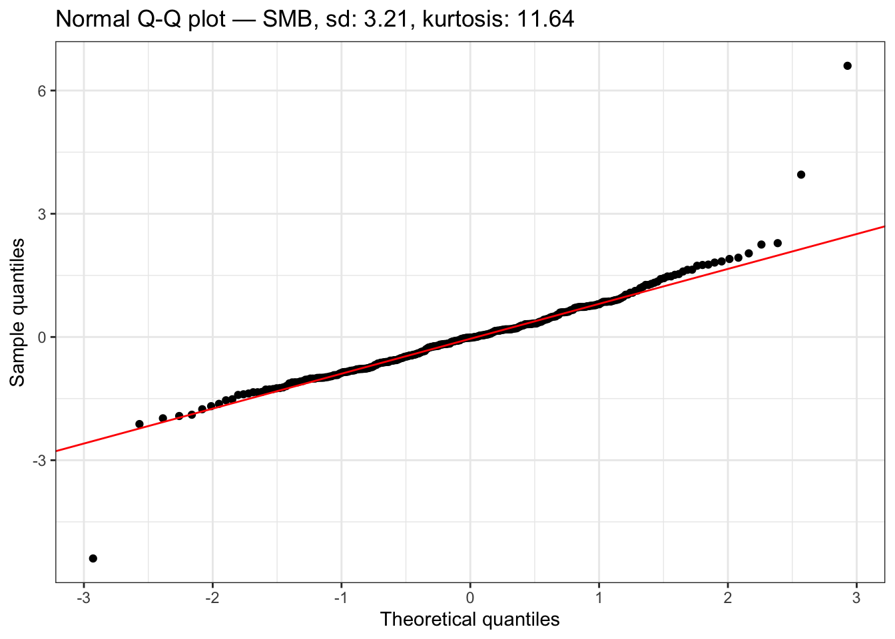
Standardize HML to improve visualization
ggplot() +
geom_qq(aes(sample=with(data, (HML-mean(HML))/sd(HML)))) +
geom_qq_line(aes(sample=with(data, (HML-mean(HML))/sd(HML))), color="red") +
labs(x="Theoretical quantiles", y="Sample quantiles",
title=sprintf("Normal Q-Q plot — HML, sd: %.2f, kurtosis: %.2f", sd(data$HML), kurtosis(data$HML)))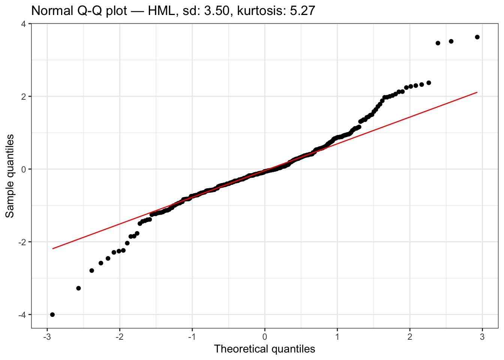
Sample mean Let \(X_1, \ldots, X_n\) denote \(n\) observations on a variable \(X\), the sample mean is
\[ \begin{align*} \overline{X}=\frac{1}{n}\sum_{i=1}^nX_i \end{align*} \]
\(\overline{X}\) is a random variable, as it is the average of random variables. This is in sharp contrast to \(\mathbb{E}[X]\) which is non-random and comes from a fixed DGP.
\(\overline{X}\) varies with each sample. If we could repeatedly collect new samples of size \(n\) from the same population and each time were able to estimate \(\overline{X}\), these estimates would be different from each other.
One useful feature is \(\mathbb{E}[\overline{X}] = \mathbb{E}[X]\). This doesn’t mean that \(\overline{X}\) itself is equal to \(\mathbb{E}[X]\). Rather, it means that, if we could repeatedly obtain (a huge number of times) new samples of size \(n\) and compute \(\overline{X}\) each time, the average of \(\overline{X}\) across repeated samples would be equal to \(\mathbb{E}[X] .\)
A real world example: You are measuring Norwegian people’s heights.
To illustrate the properties of the sample estimator:
A numerical illustration using simulations from the Bernoulli distribution.
Bernoulli distribution with different values of \(p\)
set.seed(125)
# sample size=10, Bernoulli(p=0.1)
rbinom(n = 10, size = 1, prob = c(.10)) ## [1] 0 0 0 0 1 1 0 0 0 0# sample size=10, Bernoulli(p=0.5)
rbinom(n = 10, size = 1, prob = c(.50)) ## [1] 0 1 0 0 1 0 0 1 1 1# sample size=10, Bernoulli(p=0.9)
rbinom(n = 10, size = 1, prob = c(.90)) ## [1] 1 1 1 1 1 1 1 1 1 1\(\text{Bernoulli}(p=0.5)\) with different sample size
set.seed(125)
# sample size=10
p_hat_1 <- sum(rbinom(n = 10, size = 1, prob = c(.50)))/10
# sample size=100
p_hat_2 <- sum(rbinom(n = 100, size = 1, prob = c(.50)))/100
# sample size=1,000
p_hat_3 <- sum(rbinom(n = 1000, size = 1, prob = c(.50)))/1000
# sample size=10,000
p_hat_4 <- sum(rbinom(n = 10000, size = 1, prob = c(.50)))/10000
c(p_hat_1, p_hat_2, p_hat_3, p_hat_4)## [1] 0.6000 0.5600 0.4850 0.5007Conclusion: sample average from one sample approaches better to the population quantity as sample size increases.
Uncertainty reduces as sample size increases
bt <- 100
# sample size=10, have 100 such samples, calculate the df of p_hat
rbinom(n = 10*bt, size = 1, prob = c(.50)) %>%
matrix(ncol=bt, byrow=FALSE) %>%
apply(2, function(col) sum(col)/10) %>%
{c("mean" = mean(.), "sd" = sd(.))}## mean sd
## 0.5480000 0.1623564# sample size=100
rbinom(n = 100*bt, size = 1, prob = c(.50)) %>%
matrix(ncol=bt, byrow=FALSE) %>%
apply(2, function(col) sum(col)/100) %>%
{c("mean" = mean(.), "sd" = sd(.))}## mean sd
## 0.5053000 0.0483141# sample size=1,000
rbinom(n = 1000*bt, size = 1, prob = c(.50)) %>%
matrix(ncol=bt, byrow=FALSE) %>%
apply(2, function(col) sum(col)/1000) %>%
{c("mean" = mean(.), "sd" = sd(.))}## mean sd
## 0.49949000 0.01670994# sample size=10,000
rbinom(n = 10000*bt, size = 1, prob = c(.50)) %>%
matrix(ncol=bt, byrow=FALSE) %>%
apply(2, function(col) sum(col)/10000) %>%
{c("mean" = mean(.), "sd" = sd(.))}## mean sd
## 0.499517000 0.005463507Positively skewed (mean > median) data have a J-shaped pattern in the Q-Q plot.
library(fGarch)
sim_data <- rsnorm(10000, mean = 0, sd = 1, xi = 2.5)
c("mean" = mean(sim_data),
"sd" = sd(sim_data),
"median"= median(sim_data),
"skew" = skewness(sim_data),
"kurtosis" = kurtosis(sim_data)) %>%
as_tibble_row() %>%
kable(floating.environment="sidewaystable", digits = 3, escape=F) %>%
kable_styling(bootstrap_options = c("striped", "hover"), full_width = F, latex_options="scale_down") | mean | sd | median | skew | kurtosis |
|---|---|---|---|---|
| -0.008 | 0.997 | -0.189 | 0.872 | 3.558 |
ggplot() +
geom_histogram(aes(x=sim_data,
y=..density..),
fill="#BDBCBC",
color="black",
binwidth = .2,
boundary=0) +
geom_density(aes(x=sim_data), color="black") +
stat_function(fun = dnorm, args = list(mean = 0, sd = 1), color="blue") +
stat_function(fun = dnorm, args = list(mean = 0, sd = 1), fill="blue", geom="area", alpha=0.2) +
labs(x="Sample values", y="Density", title="Density plot") +
scale_x_continuous(limits = c(-4,4))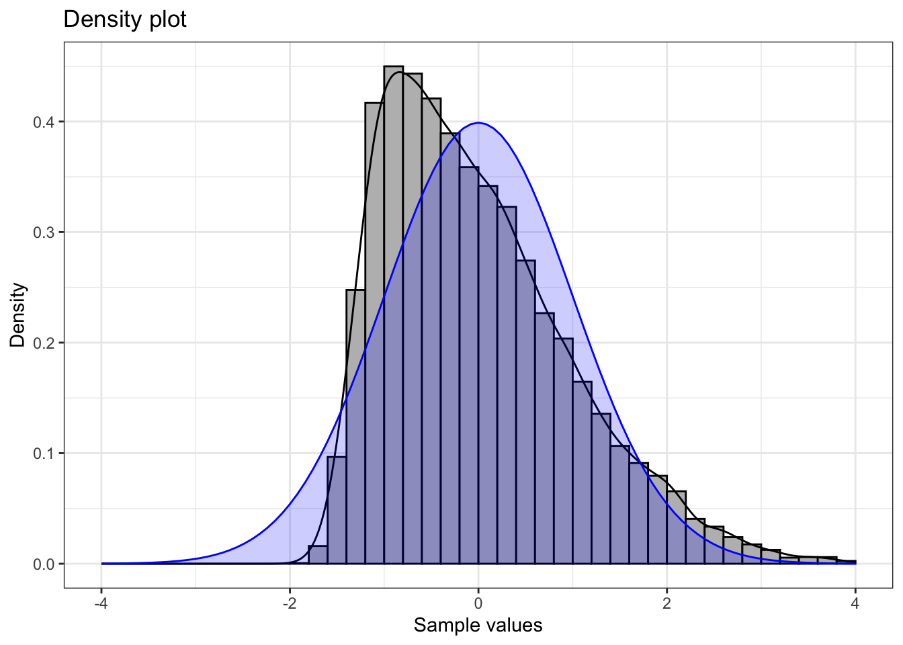
ggplot() +
geom_qq(aes(sample=sim_data)) +
geom_qq_line(aes(sample=sim_data), color="red") +
labs(x="Theoretical quantiles", y="Sample quantiles",
title="Normal Q-Q plot")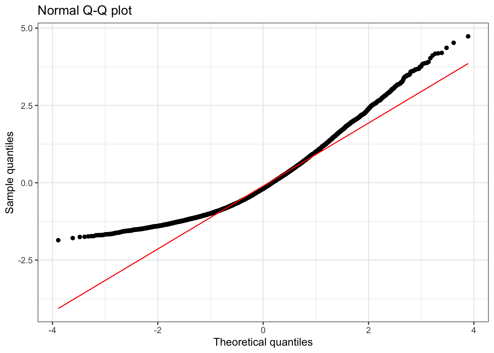
Negatively skewed (mean < median) data have Q-Q plots that display an inverted J-shape.
| mean | sd | median | skew | kurtosis |
|---|---|---|---|---|
| -0.026 | 1.004 | 0.147 | -0.817 | 3.423 |
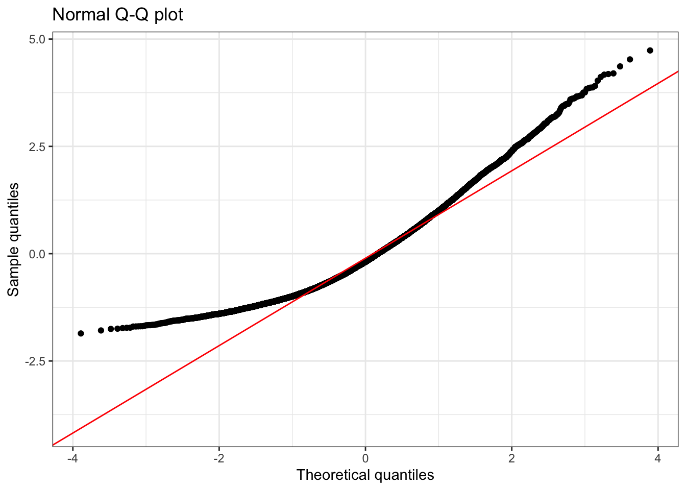
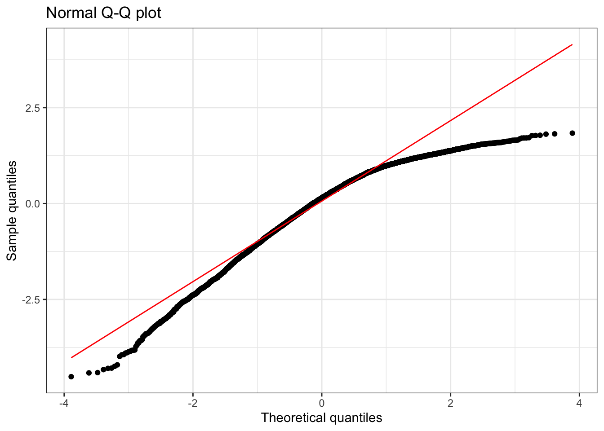
| mean | sd | median | skew | kurtosis |
|---|---|---|---|---|
| -0.068 | 1.585 | -0.048 | -0.139 | 9.91 |
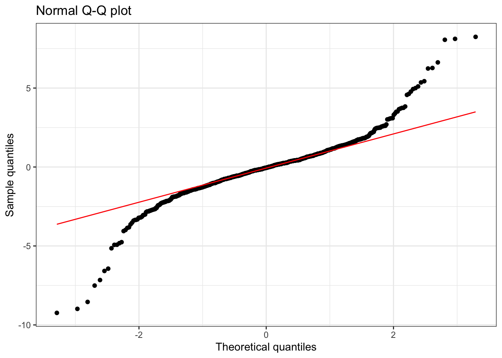
The data in the plot below is a combination uniform distribution with minimum \(-1\) and maximum \(1\) and a normal distribution with mean \(0\) and standard deviation \(0.1\).
| mean | sd | median | skew | kurtosis |
|---|---|---|---|---|
| 0.039 | 0.586 | 0.044 | -0.05 | 1.877 |
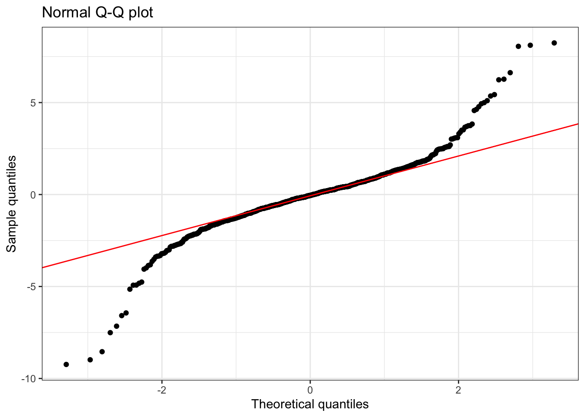
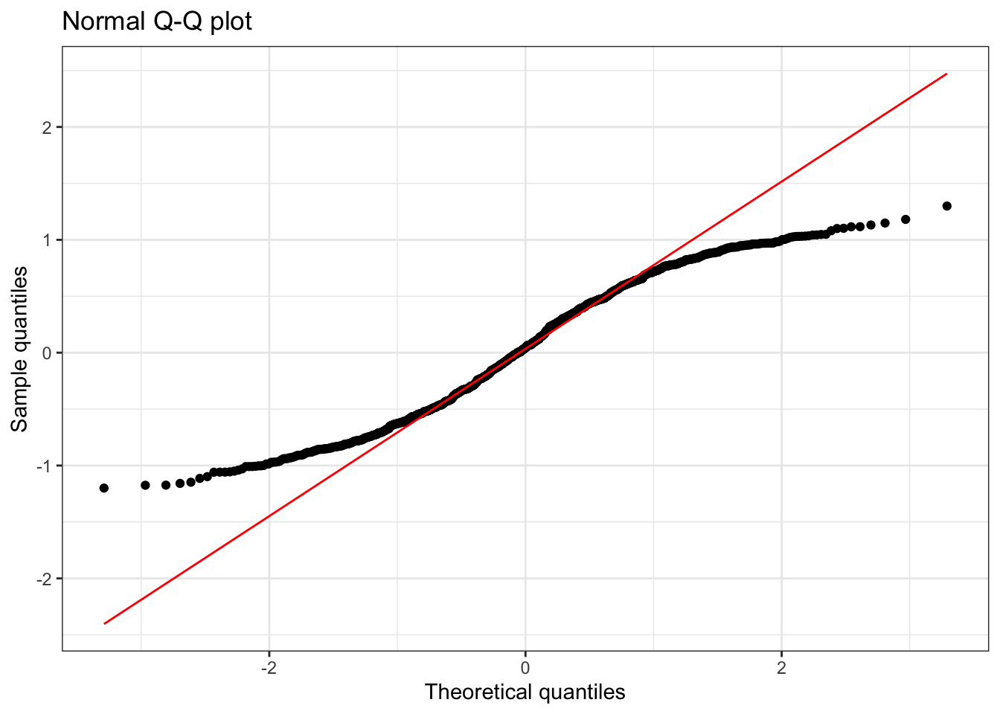
Q-Q plot visualization:
https://xiongge.shinyapps.io/QQplots/
Social Science Computing Cooperative, Normality, University of Wisconsin-Madison, accessed 29 August 2024, https://sscc.wisc.edu/sscc/pubs/RegDiag-R/normality.html.